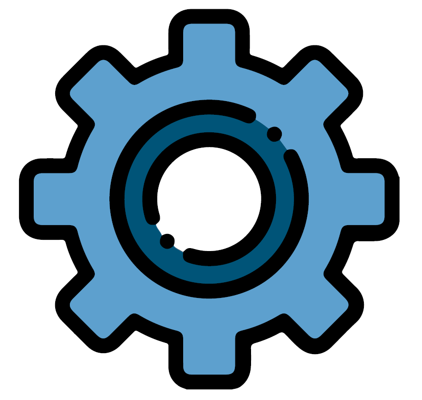

Formation |
Consulting |

Outils |
ac6-formation propose un catalogue complet de formations couvrant tous les champs depuis l'informatique industrielle, le développement et la programmation de systèmes embarqués et temps-réels.
ac6-conseil propose des services de conseil, expertise et ingéniérie pour vous aider à développer vos systèmes embarqués.
ac6-tools propose un ensemble d'outils pour le développement de systèmes embarqués.
|
TOP 5 |

Embarqué et Temps-Réel |
Comme toute application informatique, les applications industrielles ou embarquées doivent être adaptées au système d'exploitation qui les supportent. De plus, l'environnement souvent très spécifique dans lesquelles s'exécutent ces systèmes font qu'il est parfois nécessaire de les adapter à l'environnement matériel. ac6-formation vous propose des formations vous permettant de réaliser des applications utilisant un système d'exploitation embarqué, mais aussi d'adapter ce système d'exploitation si le besoin s'en fait sentir. Et comme créer des systèmes fonctionnant en temps réel pose de nombreux problèmes spécifiques, ac6-formation propose toute une gamme de cours permettant de se former aux différents outils et techniques à utiliser dans ce contexte. |
Embedded C++ |
OpenCL |
|
i.MX8 Implementation |
i.MX6 Implementation |